Feed post (3)
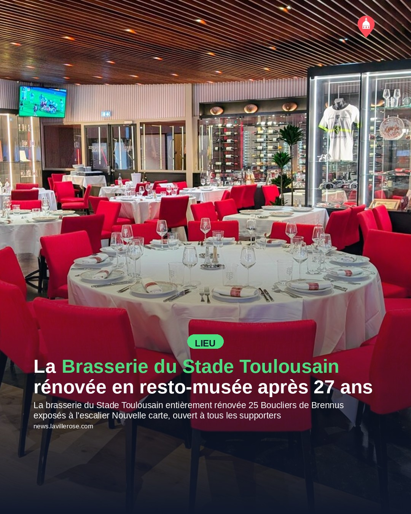
La Brasserie du Stade Toulousain rénovée en resto-musée après 27 ans
Texte sur l'image
La brasserie du Stade Toulousain entièrement rénovée
25 Boucliers de Brennus exposés à l'escalier
Nouvelle carte, ouvert à tous les supporters
Légende publiée
Lieu culte pour les supporters du Stade Toulousain, la Brasserie du stade Ernest-Wallon vient de vivre sa première grande transformation en 27 ans. Fini le restaurant un peu fermé sur lui-même : l'endroit s'est mué en véritable musée du club, avec trophées et souvenirs exposés tout au long du parcours. Vingt-cinq mini Boucliers de Brennus accueillent désormais les visiteurs dès l'escalier — de quoi rappeler l'incroyable palmarès des hommes d'Ugo Mola. Nouvelle carte, nouvelle ambiance, et une ambition claire : accueillir supporters, familles et professionnels dans un cadre rénové, accessible à tous, pas seulement aux initiés.
Modifier sur GitHub →
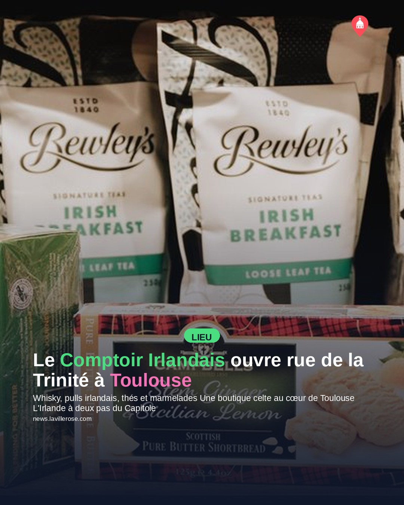
Le Comptoir Irlandais ouvre rue de la Trinité à Toulouse
Texte sur l'image
Whisky, pulls irlandais, thés et marmelades
Une boutique celte au cœur de Toulouse
L'Irlande à deux pas du Capitole
Légende publiée
L'Irlande débarque rue de la Trinité ! Le Comptoir Irlandais, enseigne emblématique née à Brest en 1987, a ouvert son 54e magasin à Toulouse grâce à Didier, un Breton qui attendait ce moment depuis son arrivée dans la ville en 2005. Au programme : pulls en laine irlandaise, whiskys, marmelades, thés, étoles et une foule de trouvailles venues des terres celtes et anglo-saxonnes. Que vous cherchiez un cadeau original ou simplement l'envie de voyager sans quitter Toulouse, l'adresse vaut le détour.
Modifier sur GitHub →
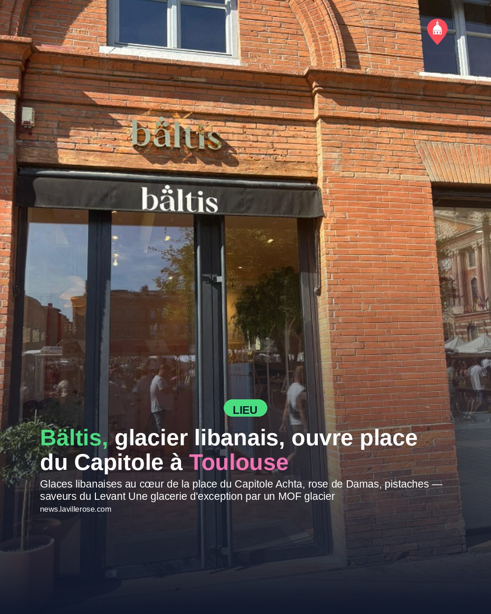
Bältis, glacier libanais, ouvre place du Capitole à Toulouse
Texte sur l'image
Glaces libanaises au cœur de la place du Capitole
Achta, rose de Damas, pistaches — saveurs du Levant
Une glacerie d'exception par un MOF glacier
Légende publiée
Bältis a posé ses valises place du Capitole et c'est une très bonne nouvelle pour les amateurs de glaces hors du commun. La glacerie libanaise, née à Paris en 2022 après l'explosion du port de Beyrouth, propose des parfums qui font voyager : achta à la fleur d'oranger, halawa, rose de Damas, ou encore thym-huile d'olive — le tout travaillé avec les techniques d'un Meilleur Ouvrier de France glacier. Résultat : des textures onctueuses et élastiques typiques des glaces du Levant, souvent couronnées de pistaches concassées ou d'une barbe à papa artisanale. L'adresse est au 20 place du Capitole, idéale pour une pause fraîcheur quand le soleil tape fort sur la Ville rose.
Modifier sur GitHub →
Story (12)

Les Faux British : comédie catastrophe au Café Théâtre Les 3T
Modifier sur GitHub →
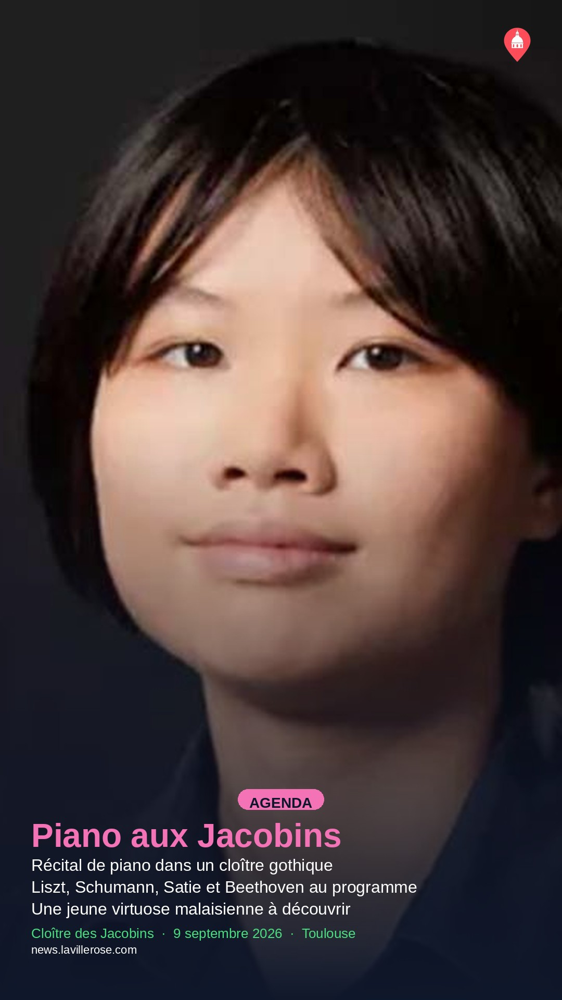
Magdalene Ho en récital de piano au Cloître des Jacobins
Modifier sur GitHub →

Festival Sign'Ô : la création en Langue des Signes à Toulouse
Modifier sur GitHub →
Préambule du Festival de rue de Ramonville place Bagatelle
Modifier sur GitHub →
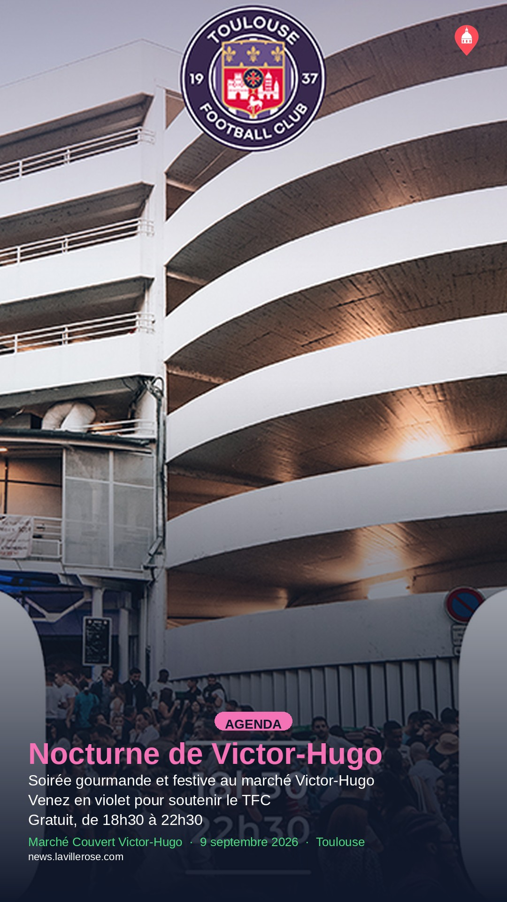
La Nocturne du Marché Victor-Hugo aux couleurs du Toulouse FC
Modifier sur GitHub →
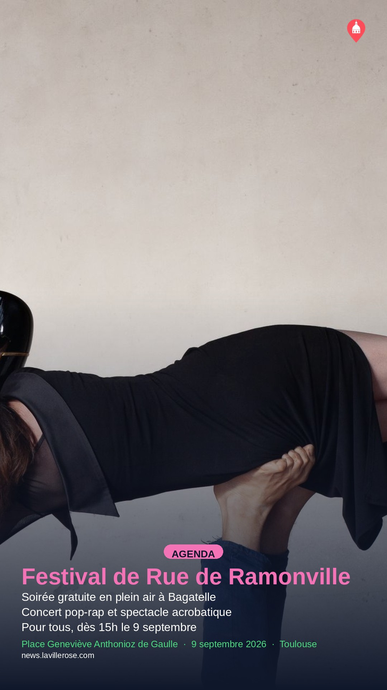
Préambule du Festival de Rue de Ramonville place Bagatelle
Modifier sur GitHub →
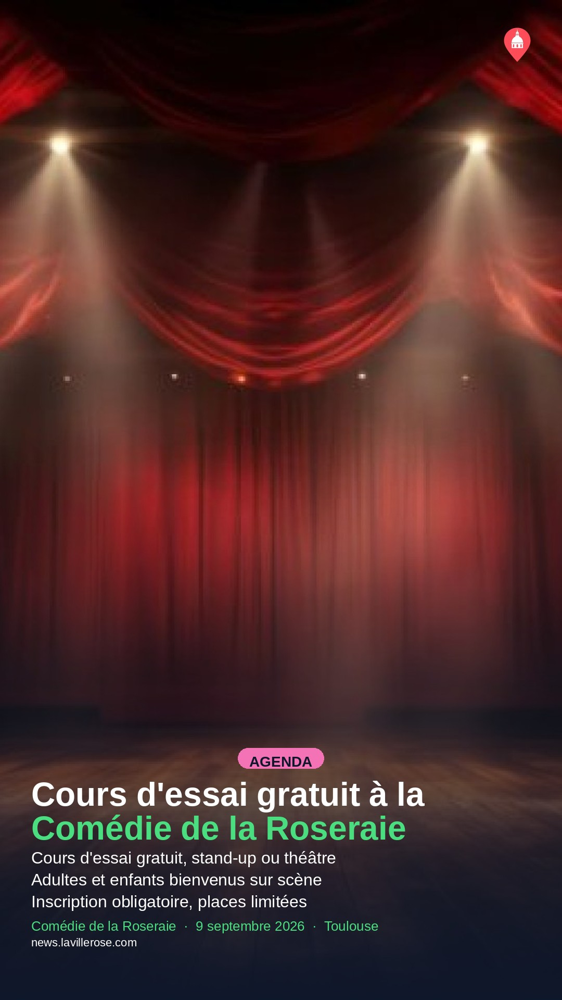
Cours d'essai gratuit à la Comédie de la Roseraie
Modifier sur GitHub →

La Semaine Seniors et + place du Capitole : bien-être et animations gratuites
Modifier sur GitHub →
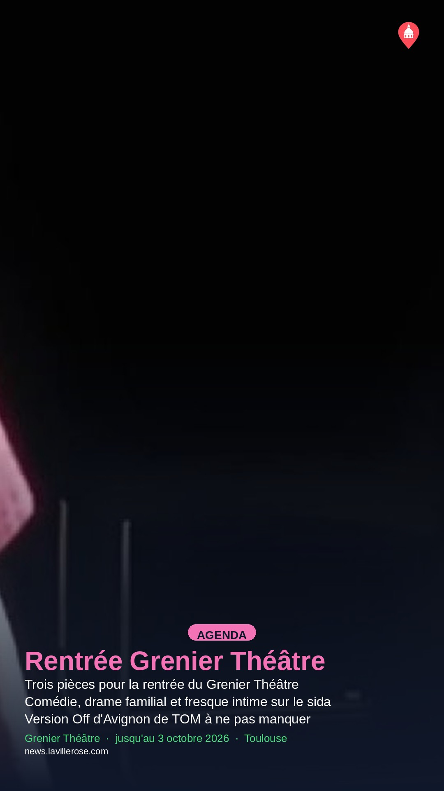
La rentrée du Grenier Théâtre avec trois pièces de Caprini
Modifier sur GitHub →
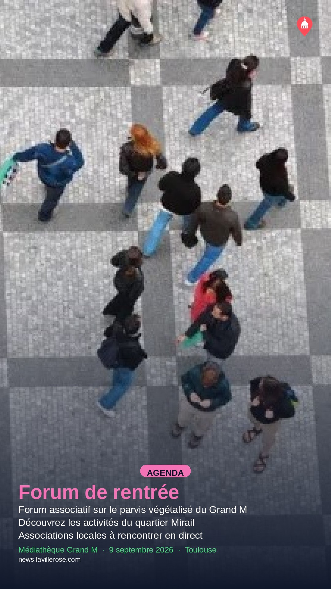
Forum de rentrée des associations devant la Médiathèque Grand M
Modifier sur GitHub →
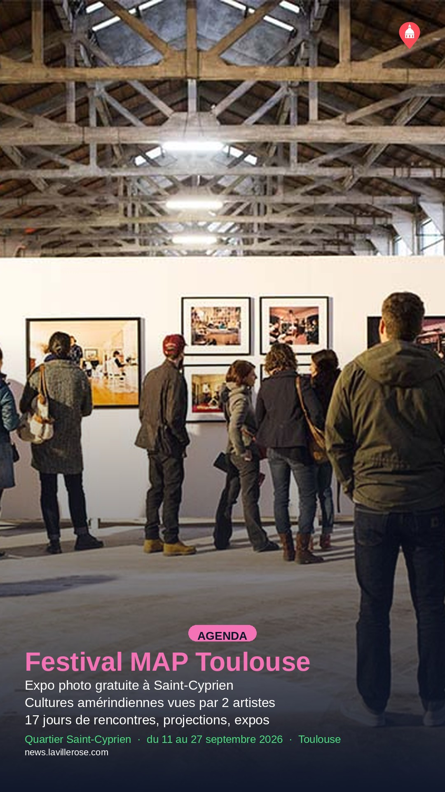
Festival de Photo MAP : exposition gratuite à Saint-Cyprien
Modifier sur GitHub →
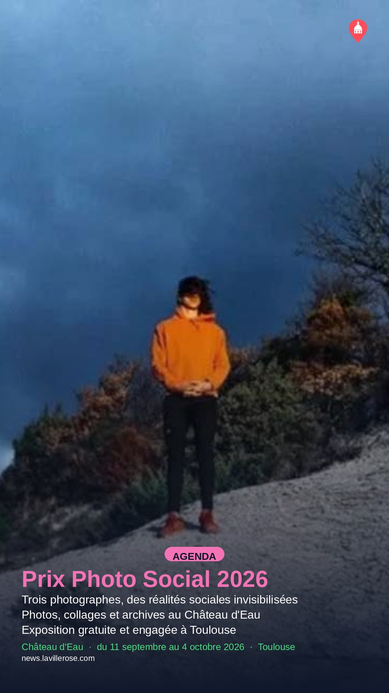
Prix Photo Social 2026 au Château d'Eau : trois regards engagés
Modifier sur GitHub →
À venir (49)
Événements déjà en base qui redeviendront éligibles à une Story sur une date future,
d'après leur planning actuel. Projection, pas une garantie : elle suppose qu'aucun
nouvel article n'arrive et que rien d'autre n'est publié entre-temps.
2026-09-10
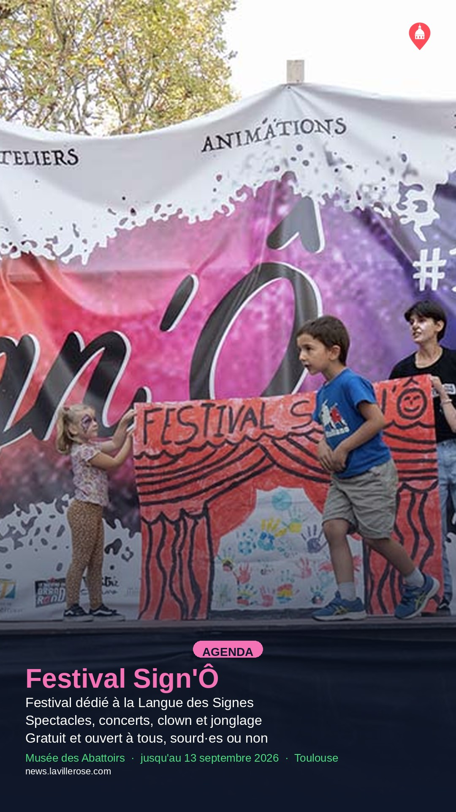
Festival Sign'Ô : la création en Langue des Signes à Toulouse
jusqu'au 13 septembre 2026

La Semaine Seniors et + place du Capitole : bien-être et animations gratuites
jusqu'au 12 septembre 2026

Ilyun Bürkev en récital au Cloître des Jacobins pour Piano aux Jacobins
10 septembre 2026

Tioma en concert au Bijou le 10 septembre
10 septembre 2026
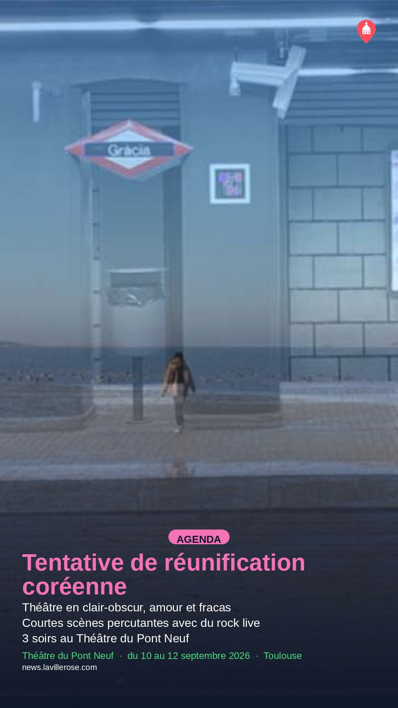
Spectacle théâtral sur l'amour et les liens humains au Pont Neuf
du 10 au 12 septembre 2026
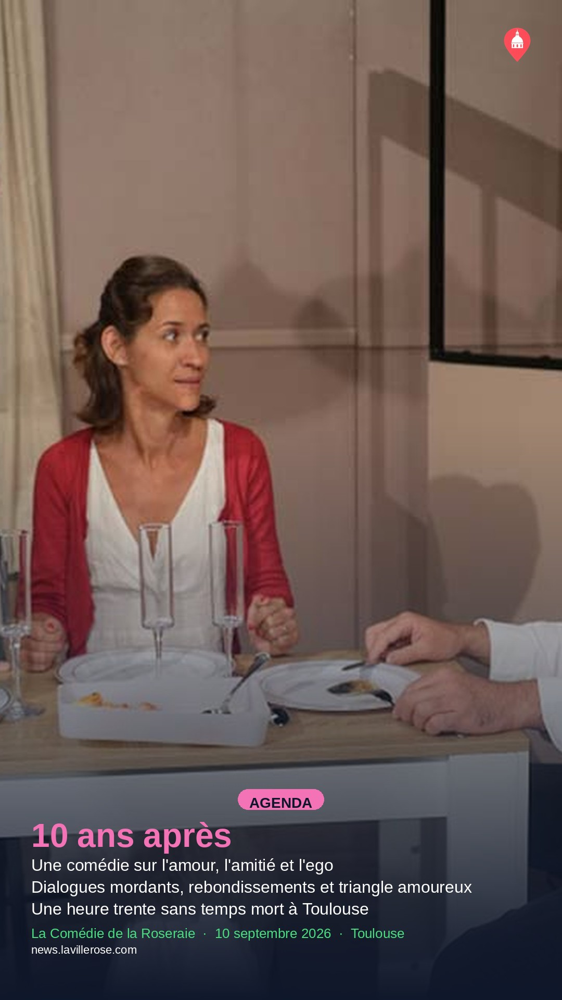
« 10 ans après » : une comédie pétillante à la Comédie de la Roseraie
10 septembre 2026

Echo Jazz : un quartet accordé à 432Hz au Taquin
10 septembre 2026
2026-09-11
Festival Sign'Ô : la création en Langue des Signes à Toulouse
jusqu'au 13 septembre 2026
La Semaine Seniors et + place du Capitole : bien-être et animations gratuites
jusqu'au 12 septembre 2026
Spectacle théâtral sur l'amour et les liens humains au Pont Neuf
du 10 au 12 septembre 2026

Comédie « Les Clotildes » au Café Théâtre Les 3T
11 septembre 2026
Vadim Kholodenko au Cloître des Jacobins : Beethoven et Liszt
11 septembre 2026

Syrano fête 20 ans de carrière au Bijou avec Danielito de Tryo
11 septembre 2026
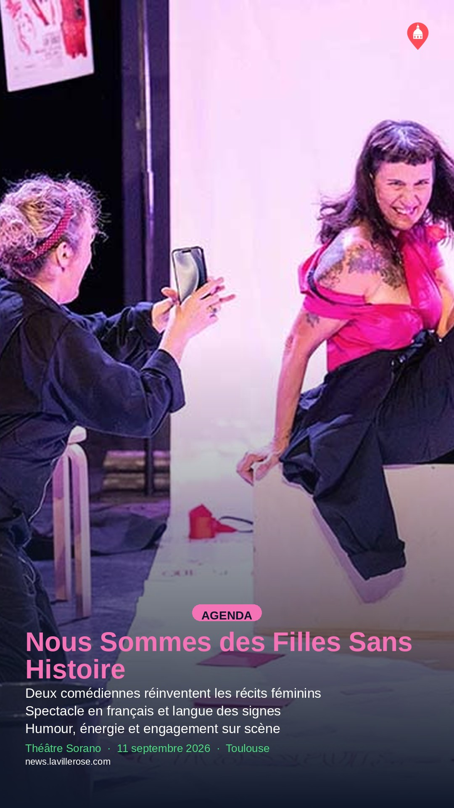
Spectacle féministe bilingue au Théâtre Sorano en septembre
11 septembre 2026

CHELABÔM en concert au Taquin le 11 septembre
11 septembre 2026

Bruno Aguiar en spectacle : « Vacances de Rêve » au Café Théâtre Les 3T
11 septembre 2026

Fifigrot : le festival du film grolandais de retour en septembre
du 14 au 20 septembre 2026
2026-09-12
Festival Sign'Ô : la création en Langue des Signes à Toulouse
jusqu'au 13 septembre 2026
La Semaine Seniors et + place du Capitole : bien-être et animations gratuites
jusqu'au 12 septembre 2026
Spectacle théâtral sur l'amour et les liens humains au Pont Neuf
du 10 au 12 septembre 2026

Deux événements de triathlon à Toulouse en septembre et octobre
12 septembre 2026
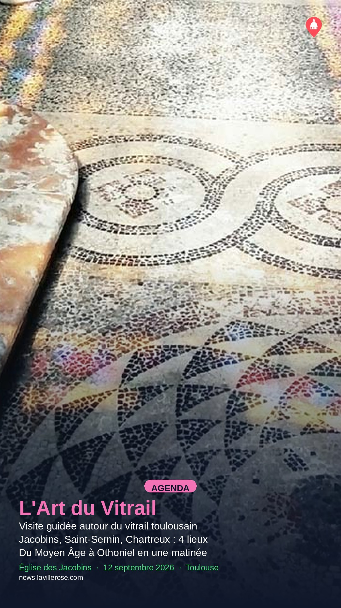
Visite guidée : l'art du vitrail à travers Toulouse
12 septembre 2026

Parcours insolite : des ornements Virebent à la Maison Giscard
12 septembre 2026

Mon Petit Chaperon : spectacle jeunesse à la Comédie de la Roseraie
du 12 au 13 septembre 2026

Les Fils de ta Mère en cabaret improvisé au Bijou
12 septembre 2026

Les Mélodies du Canal aux Cales de Radoub : concerts solidaires sur l'eau
du 12 au 13 septembre 2026
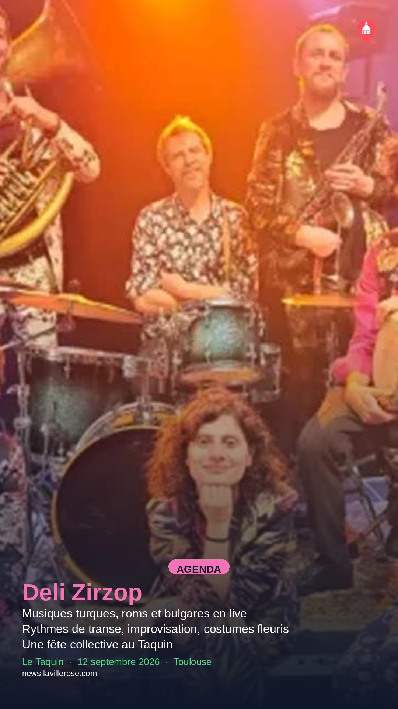
Deli Zirzop en concert au Taquin le 12 septembre
12 septembre 2026
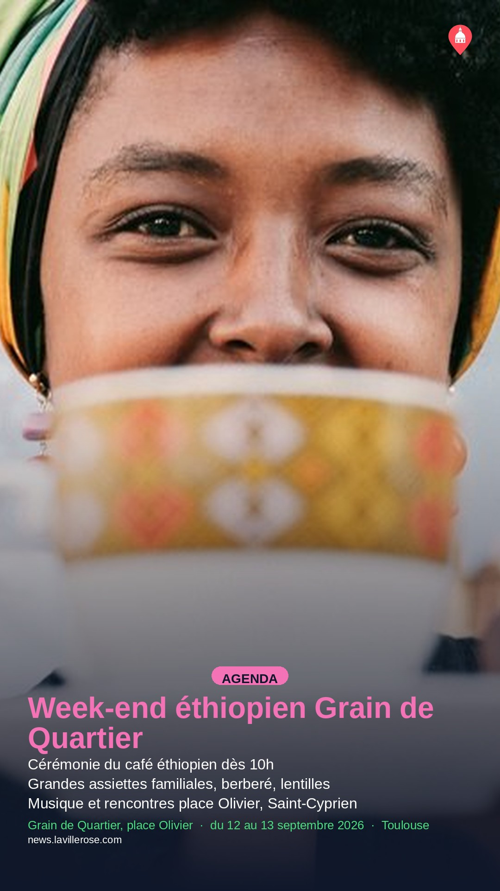
Grain de Quartier fête sa rentrée avec un week-end éthiopien à Saint-Cyprien
du 12 au 13 septembre 2026

Les Murmures de la Terre au Théâtre de la Violette
du 12 au 13 septembre 2026
Fifigrot : le festival du film grolandais de retour en septembre
du 14 au 20 septembre 2026
2026-09-13
Festival Sign'Ô : la création en Langue des Signes à Toulouse
jusqu'au 13 septembre 2026
Mon Petit Chaperon : spectacle jeunesse à la Comédie de la Roseraie
du 12 au 13 septembre 2026
Les Mélodies du Canal aux Cales de Radoub : concerts solidaires sur l'eau
du 12 au 13 septembre 2026
Grain de Quartier fête sa rentrée avec un week-end éthiopien à Saint-Cyprien
du 12 au 13 septembre 2026
Les Murmures de la Terre au Théâtre de la Violette
du 12 au 13 septembre 2026

Visite inclusive et sensorielle de Toulouse pour tous les publics
13 septembre 2026

Visite guidée du quartier Marengo, laboratoire urbain du XIXe siècle
13 septembre 2026
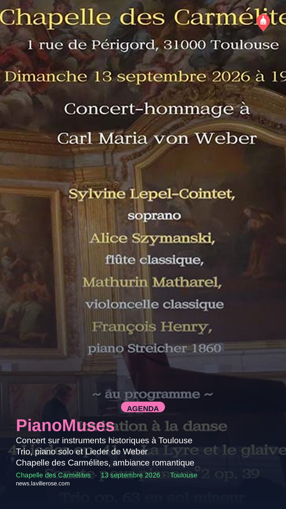
Hommage à Weber sur instruments historiques à la Chapelle des Carmélites
13 septembre 2026
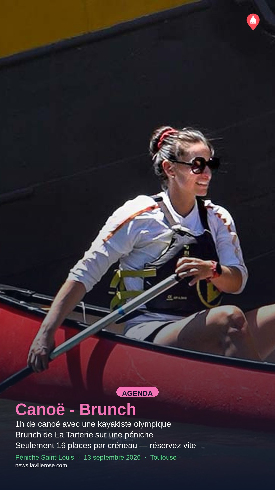
Canoë avec une kayakiste olympique puis brunch sur une péniche
13 septembre 2026
Fifigrot : le festival du film grolandais de retour en septembre
du 14 au 20 septembre 2026
2026-09-14
Fifigrot : le festival du film grolandais de retour en septembre
du 14 au 20 septembre 2026

Cartoon Forum 2026 : 66 séries d'animation européennes à Toulouse
du 14 au 17 septembre 2026
Paul Lay en concert au Cloître des Jacobins
14 septembre 2026

La Quinzaine Littéraire : rencontres gratuites dans les bibliothèques toulousaines
du 17 septembre au 4 octobre 2026
2026-09-15
Cartoon Forum 2026 : 66 séries d'animation européennes à Toulouse
du 14 au 17 septembre 2026
Pierre Laurent Aimard interprète Bach et Kurtág au Cloître des Jacobins
15 septembre 2026
2026-09-16
Cartoon Forum 2026 : 66 séries d'animation européennes à Toulouse
du 14 au 17 septembre 2026

Balade naturaliste le long du canal à Rangueil
16 septembre 2026

TABANAR en concert au Taquin le 16 septembre
16 septembre 2026